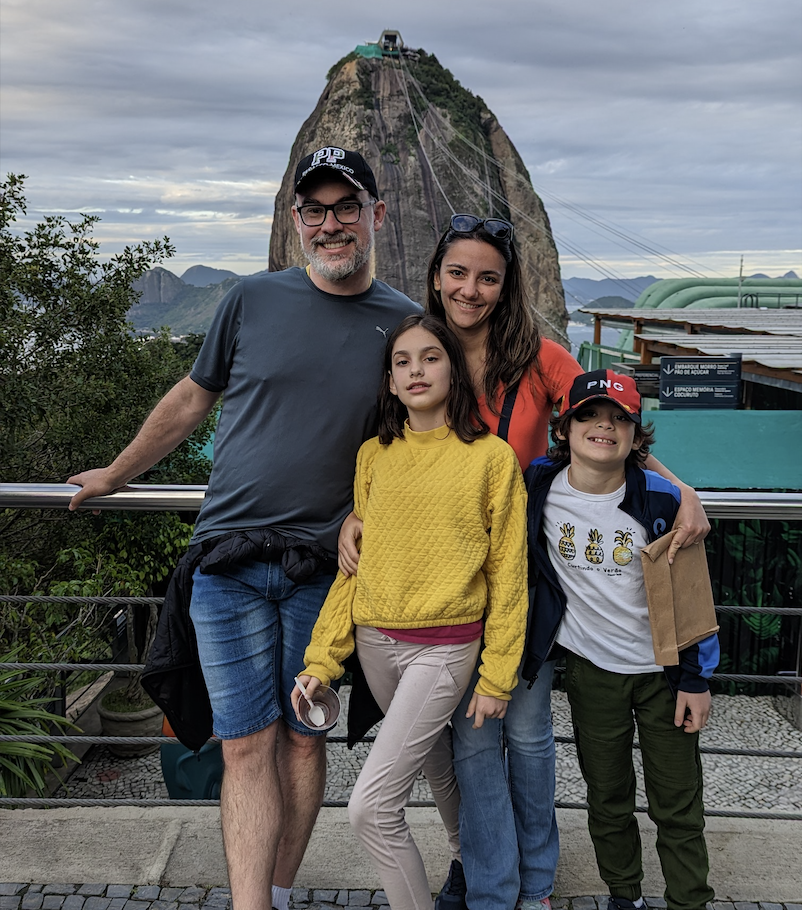

Meet the Sponsor
Dr. Ana Paula Chaves
Dr. Ana Paula Chaves has been an assistant teaching professor at Northern Arizona University for the last two years after finishing her PhD in Informatics and Computing here in 2020. She is originally from Brazil and is a mother to a family of four. She became an advocate for meal prepping while trying to maintain working from home and taking care of her family during the pandemic. She realized the struggle of trying to make fresh and tasty meals for her family while maintaining such a busy schedule. For the last couple of years, she and her husband have been planning their meal prep by hand, which has shown great results, but also a lot of work and headaches trying to keep track of everything on their own. This is where she came up with the idea for MealsMyWay. While there are plenty of meal prepping apps, none are flexible enough to support what planning meals actually looks like for a family. Dr. Chaves aims to provide an easy-to-use web and mobile app to help families best plan their meals for the week, so they can get back to enjoying meals with their loved ones.